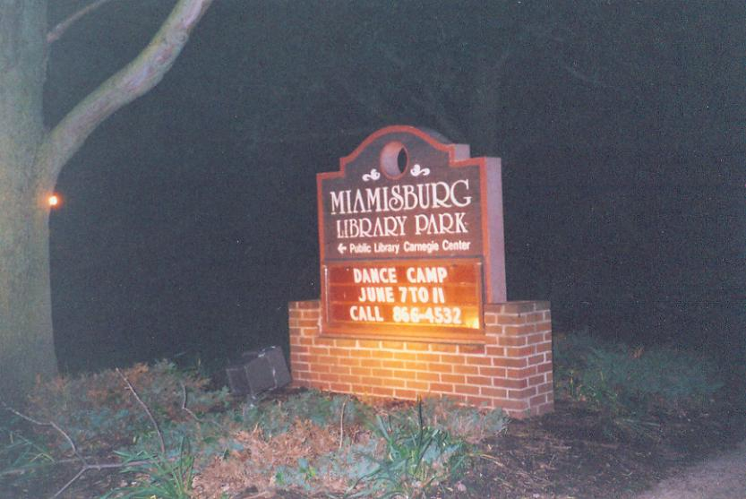
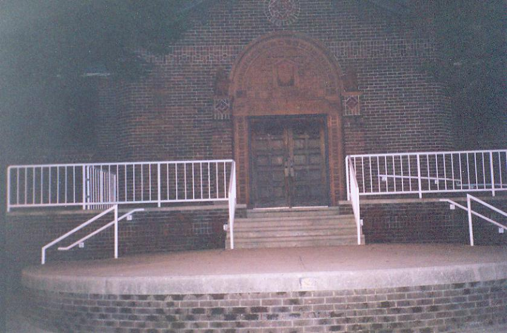
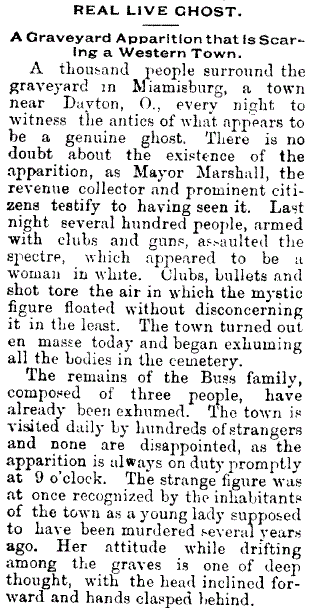
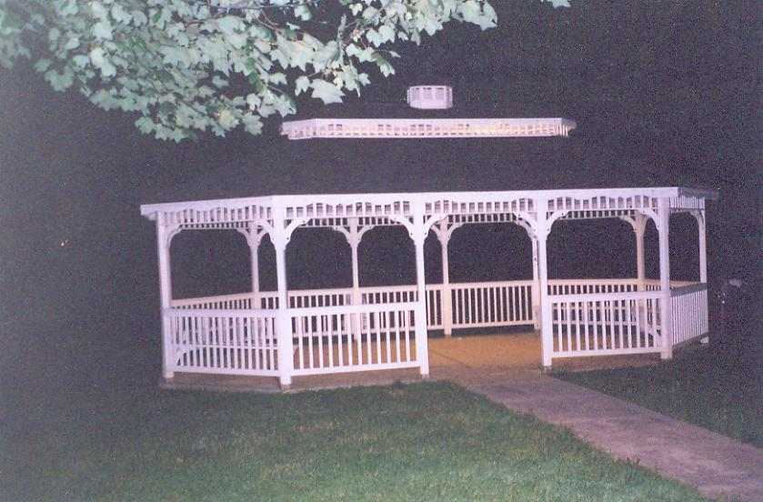
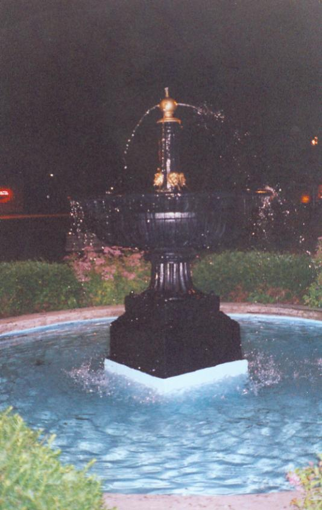
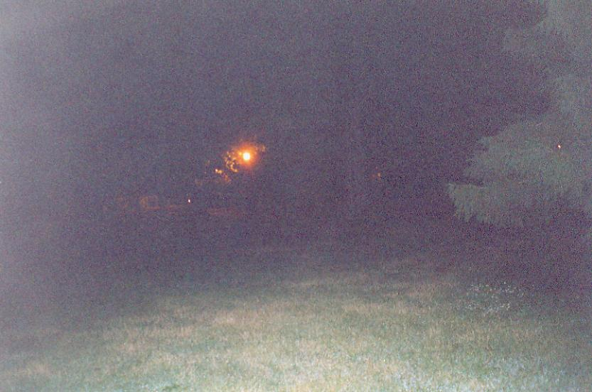

Library Park is the focal point of a haunting which was recorded with mind-blowing detail in the newspapers of 1884, when the apparition of a female murder victim appeared there on many consecutive nights. In the 1880s the plot of land now called Library Park was the village cemetery, having been established there in 1850. The bodies were later moved to Hill Grove in the late 1880s.

More than a few were unearthed in the uproar which followed the repeated appearance of the woman in white--a "Real Live Ghost," according to the Frederick, Maryland Daily News of March 27, 1884, "A Graveyard Apparition that is Scaring a Western Town."

The mayor saw the ghost; so did the revenue collector. Townspeople, after witnessing her night after night drifting among the tombstones with an attitude "of deep thought, with the head inclined forward and hands clasped behind," decided the best idea was to try to re-murder her, and a mob attacked her that March armed with clubs and firearms. Bullets and bats alike passed through the specter "without disconcerning it in the least."
The article goes on to say that "[t]he town is visited daily by hundreds of strangers and none are disappointed, as the apparition is always on duty promptly at nine o'clock." Locals recognized her as a woman found dead several years earlier, whom it had always been suspected was the victim of foul play.
When their attacks on the punctual spirit failed, the town of Miamisburg set to work digging up graves, "exhuming all the bodies in the cemetery." First to go were the three members of the Buss family.

Astonishing as it is, this really was reported as fact at the time, and it seems to have been one of the most thoroughly tested and verified instances of a spirit manifestation on record in this state. The emergency exhumations prompted by the lady in white's repeated appearances were the catalyst for the removal of the Miamisburg Cemetery to Hill Grove, where those bodies still lie. One of them (the Buss girl?) was restless enough in the years following her untimely demise to rise from the grave nightly for more than a month straight. After the graves were cleared the Carnegie Library was built in 1909-1910, along with a fountain, gazebo, and bandstand. The girl stopped making her regular appearances--but she's never been entirely at rest. Her unhappy form has been seen as recently as the 1980s.

I was lucky enough to visit Library Park one evening with my friend Jenny, on our way to Germantown Cemetery. We took a leisurely walk along its paths and found it pretty, but largely indistinguishable from any other small-town park. There is nothing to indicate the astonishing visitations this former graveyard experienced more than 120 years ago, and the unhappy murder victim seems to have vacated Library Park for the time being.

Back
forgottenohio@yahoo.com
Sources
Baer, Sandra. "Survey Seeks Historical Information." Dayton Daily News, March 5, 1998. pp. Z8-1.
"Real Live Ghost." Frederick, MD Daily News. March 27, 1884. pp. 1.